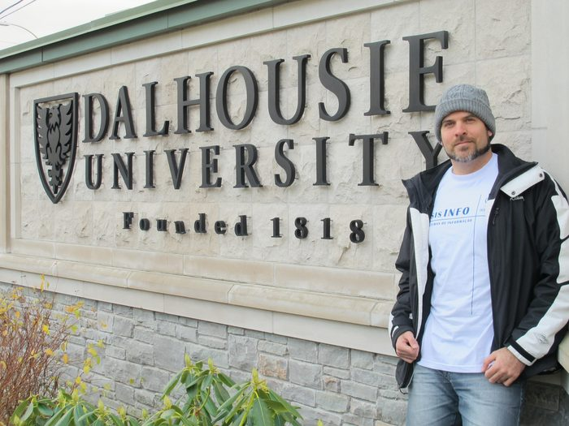
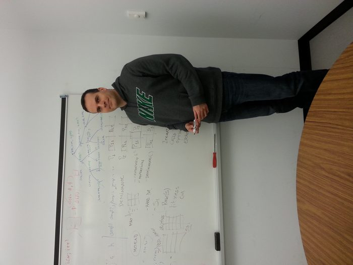
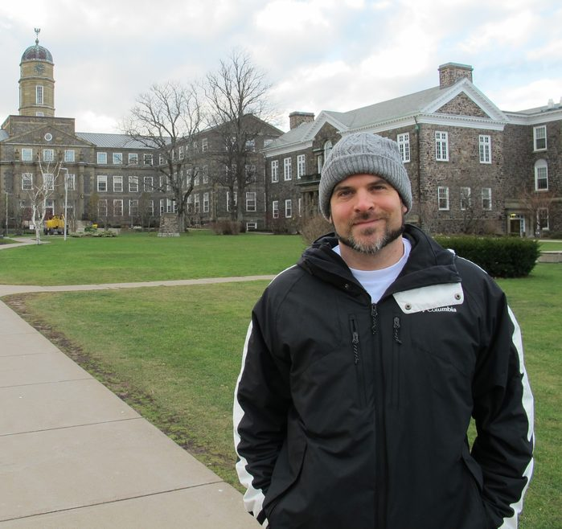

TRAJETÓRIA
Sou executivo e líder sênior de engenharia de software, com mais de dez anos construindo e escalando plataformas distribuídas de alta disponibilidade e baixa latência. Atualmente sou head de engenharia em uma healthtech orientada por IA, liderando sistemas de dados, pipelines de LLM e agentes inteligentes autônomos que sustentam plataformas de acesso à saúde em produção.
Em paralelo, sou professor e pesquisador em Ciência da Computação — hoje na reta final do doutorado na PUCRS (previsão de conclusão em 2026), com foco em IA Generativa, Digital Twins e Sistemas Autônomos. Fui pesquisador visitante no Risk Analytics Lab da Dalhousie University, no Canadá.



Período de pesquisa na Dalhousie University, Canadá.
Essa dupla atuação não é coincidência: pesquisa de ponta em IA alimenta decisões de arquitetura reais, e a experiência de escalar plataformas em produção informa o que vale a pena pesquisar. Histórico profissional completo →
Baseado em Porto Alegre, Rio Grande do Sul, com atuação também em Berlim, Alemanha.
FORMAÇÃO
- Doutorado em Ciência da Computação — PUCRSPREVISÃO 2026
- Mestrado em Ciência da Computação — PUCRS / Dalhousie University2016
- Bacharelado em Sistemas de Informação — Faculdade Dom Bosco de Porto Alegre2012
ENSINO E PESQUISA
Professor em programas de graduação e pós-graduação em Ciência da Computação e Engenharia de Software na PUCRS (desde 2013), Universidade La Salle (desde 2025) e Faculdade Dom Bosco (desde 2012) — incluindo avaliações acadêmicas, mentoria e coordenação de programas de Iniciação Científica. Disciplinas atuais →
CONTATO
Currículo completo, publicações e formas de contato: